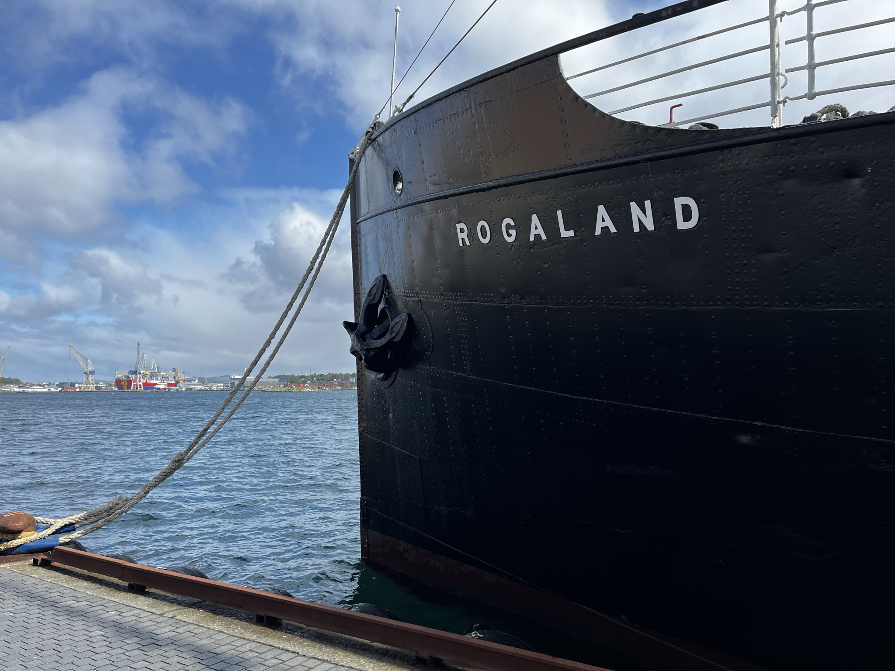
Artikel ini diperbaharui secara berkala. Perbaharuan terakhir dilakukan pada tanggal 08 Februari 2024. Artikel merupakan pengalaman pribadi penulis/ interaksi penulis dengan rekan kerja dan/ teman, dan bisa saja berbeda dengan pengalaman anda. Harap melakukan pengecekan sendiri terlebih dahulu, karena penulis tidak bertanggungjawab atas ketidaksesuaian isi artikel terhadap pengalaman yang anda dapatkan.
Penulis akan merujuk Stavanger (kota) sebagai Norway (negara), kecuali disebutkan secara spesifik. Hal ini dikarenakan banyak hal yang merupakan peraturan negara (Norway), namun ada beberapa hal spesifik (lokal) yang hanya ada di Stavanger.
Nomor Identifikasi di Norway
Di Norway, setiap orang memiliki nomor identifikasi personal berupa 11 digit angka (ini bukanlah DUF-number1). Ini berlaku untuk orang dewasa ataupun anak kecil/ balita. Ada dua tipe ID number ini, yakni National Identity Numbers/ Personal Number/ Personnummer (disingkat sebagai P-num), dan D-numbers (disingkat D-num). Anda hanya dapat memiliki salah satu dari dua tipe ini, tergantung pada kondisi dan situasi anda ketika tiba di Norway, yang dapat dibaca lebih lanjut di website resminya.
Tanpa adanya nomor ini, anda tidak akan bisa membuat digital ID seperti MinID, BuypassID, dan BankID. Digital ID 2 atau e-ID ini akan dibutuhkan ketika membuat akun bank, mengakses pajak, akses ke klinik kesehatan (GP), sampai pada dompet digital bernama Vipps yang umum digunakan di Norway (mirip seperti Gopay kalau di Indonesia).
D-num
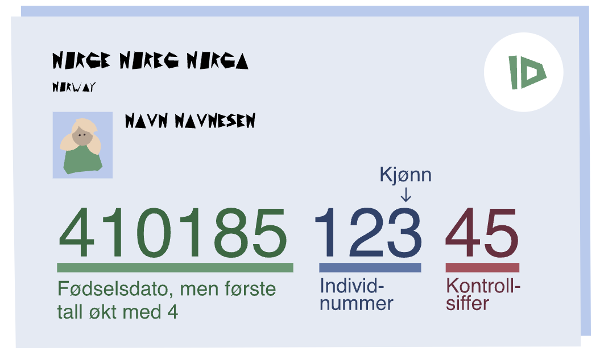
D-num umumnya diberikan sebagai nomor identifikasi sementara untuk orang asing di Norway yang berencana tinggal kurang dari 6 bulan, atau lebih dari 6 bulan namun tidak memenuhi syarat untuk mendapatkan P-num. Pengalaman rekan kerja di kantor, ada yang langsung diberikan P-num (seperti saya), ada juga yang diberikan D-num terlebih dahulu kemudian diberikan P-num.
Salah satu kekurangan D-num adalah tidak ada akses ke fasilitas kesehatan publik atau Public Health (Helsenorge). Untuk bisa mendapatkan fasilitas kesehatan publik, minimal P-num harus ada.
P-num
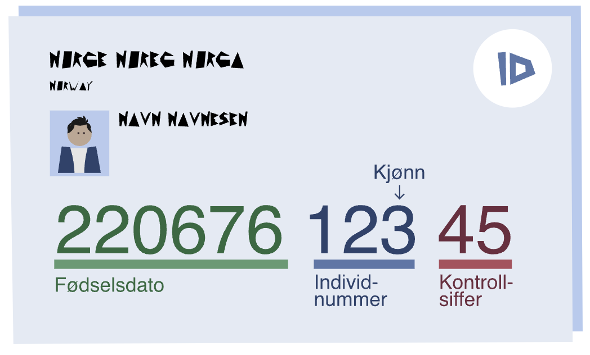
P-num ini umumnya diberikan untuk warga negara Norway, atau orang asing yang bertempat tinggal lebih dari 6 bulan di Norway dan memenuhi syarat mendapatkan P-num. Detil syaratnya saya tidak tahu, namun dari beberapa orang yang saya kenal dan baru-baru ini pindah ke Norway, hampir semua mendapatkan P-num langsung.
Sayangnya proses mendapatkan P-num ini bervariasi dari 0 minggu, sampai 4-6 minggu setibanya di Norway. Saya pribadi mendapatkan P-number pada hari pertama datang ke SUA (kantor imigrasi Stavanger). Namun beberapa teman saya mendapatkannya setelah 2 minggu. Durasi ini bergantung pada banyaknya aplikasi pada saat itu, dan akhir-akhir ini banyak refugee yang datang ke Norway, sehingga bisa saja menjadi lebih lama dari biasanya.
Pengamatan saya pribadi, lebih besar kemungkinan dapat P-num jika anda membawa serta keluarga anda ketika datang ke SUA (Imigrasi), dan tidak ada ruginya bertanya, meminta apakah anda bisa mendapatkan P-num, karena sebab-sebab di atas (akses ke kesehatan, buat akun bank, dll).
P number ini tidak usah dihapal semua, cukup 5 digit terakhir saja, karena 6 digit pertama berkaitan dengan tanggal-bulan-tahun lahir anda.
Proses membuat akun bank lokal membutuhkan kurang lebih 2-4 minggu, ditambah dengan proses menunggu hingga P-num anda tersedia, selama maksimal 2 bulan anda tidak akan memiliki akun pembayaran untuk kebutuhan sehari-hari di Norway. Disarankan untuk membawa minimal 2 jenis kartu kredit untuk pembayaran sehari-hari, bisa menggunakan VISA ataupun mastercard. Tidak disarakan menggunakan cash, karena di sini sangat jarang transaksi menggunakan cash, dan untuk menghindari sebaran virus seperti Covid-19. Saya sendiri menggunakan Wise dan tidak pernah ada masalah.
Transportasi Publik
Transportasi di sini kebanyakan berupa bis, dan beberapa area tersedia kereta.
Dari Bandara ke Stavanger/ Sebaliknya
Untuk transportasi dari Bandara ke Kota Stavanger (Stavanger Sentrum) dapat menggunakan Bis antar Bandara bernama Flybussen. Seperti terlampir di bawah, ada banyak pemberhentian bis ini dari dan ke bandara (Stavanger Lufthavn Sola/ SVG).
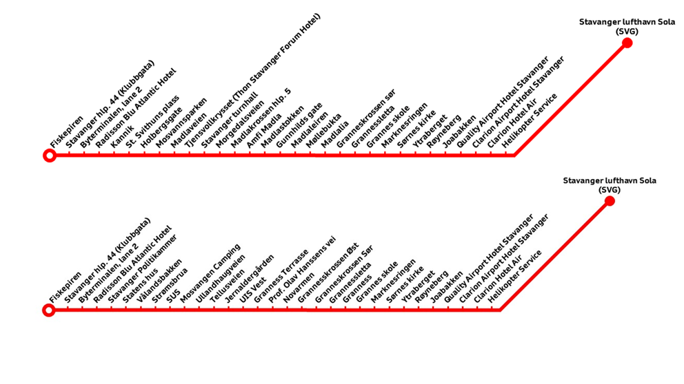
Website-nya sekarang cukup intuitif dan mudah digunakan, terlampir contoh penggunaan aplikasi website Flybussen untuk tiket dari bandara ke statens hus (sebelahnya SUA).

Biaya per orang dewasa sebesar NOK 158,00 (koma di sini bermakna koma, seperti di indonesia, jadi ini sebesar seratus lima puluh delapan Norwegian Kroner). Per tanggal artikel ini ditulis, 1 NOK = 1450 rupiah. Pembayaran dapat menggunakan kartu kredit VISA ataupun mastercard. Aplikasi Vipps seperti yang disebutkan sebelumnya, adalah digital wallet khusus Norway (akan dibahas mendetail di bab selanjutnya).

Dalam Kota
Untuk transportasi di Kota, bisa menggunakan Kolumbus. Ini semacam penyedia jasa bis dalam kota stavanger. Tiket bisa beli offline di stasiun bis, atau (seperti saya) beli online di aplikasinya. Ada dua aplikasi Kolumbus, ada yg untuk beli tiket (Kolumbus Billet).

Ada untuk bus tracking, bernama Kolumbus. Aplikasi ini cukup intuitif dan akurat dalam menentukan posisi bis secara hampir real-time.

Ketika pertamakali tiba di Stavanger, saya langsung membeli tiket via aplikasi dan melakukan pembayaran menggunakan kartu kredit. Anda bisa membeli tiket harian, mingguan, dan bulanan tergantung kebutuhan. Saya pribadi membeli tiket bulanan senilai NOK 650/ zone, untuk harga orang dewasa (anak dibawah umur tidak perlu membeli tiket). Setelah membeli anda akan mendapatkan akses ke real-time barcode di aplikasi Billet. Untuk region Stavanger-Sentrum-Madla-Tananger-Sola, masih masuk satu zonasi yang sama, sehingga cukup bayar untuk satu zona. Tiket ini juga sudah termasuk akses kereta lokal yang menghubungkan Stavanger sampai Egersund, dan juga kapal feri.

Harap diwaspadai, kalau sejauh ini memang tidak ada kewajiban untuk memindai barcode sebelum naik bis, namun secara rutin dan acak akan ada pengecekan penumpang oleh polisi setempat. Jika ditemukan anda menaiki bis tanpa mempunyai tiket yang valid, denda per orang adalah senilai NOK 950 (data valid per Oktober 2023).
Mulai dari 3 juli 2023, untuk warga yang bertempat tinggal di Stavanger, transportasi via Kolumbus (bis, kereta, ferry) digratiskan. Untuk bisa mendapatkan tiket harus mendaftar ke stavanger kommune Registrasi Tiket Kolumbus Gratis. Anda membutuhkan D-num/ personal number dan nomor handphone lokal (untuk sms verifikasi).
Sayangnya kebijakan tiket gratis ini tidak lagi diberlakukan, karena partai pengusungnya kalah dalam pemilu terakhir di Stavanger. Tiket tidak lagi gratis, dan tiap pengguna wajib membeli tiket untuk mengakses bis.
Alat Pembayaran
Kartu Kredit
Kebanyakan pembayaran dilakukan via kartu, atau apps (Vipps yg kita bahas nanti). Hanya 1-2x dalam dua bulan terakhir saya lihat ada orang bayar pakai cash.
Kartu apa yg bisa dipakai? Semua kartu yg ada logo Visa atau Mastercardnya. Saya sendiri pakai Wise card, dan Bigpay card. Keduanya berfungsi sama baiknya, kendati seringkali saya pakai Wise card, karena preferensi pribadi saja. Wise lebih luas jangkauannya, karena Bigpay ini sebarannya terkhusus di Asia saja, sedangkan untuk Wise, Eropa (termasuk Norway), UK jg masuk.
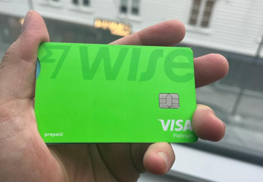
Aplikasi Vipps
Vipps merupakan aplikasi digital wallet seperti Gopay di Indonesia. Aplikasi inii cukup simpel karena memang hanya untuk bayar dan terima uang berdasarkan akun Vipps yang terhubung ke nomor handphone anda. Dibutuhkan Digital ID berupa BankID untuk membuat akun Vipps, karena termasuk ke dalam aplikasi keuangan.

Nomor HP Lokal dan Paket Data
Sebagai disclaimer dulu, ini tidak urgen untuk awal-awal. Karena pertimbangan pribadi saya putuskan untuk beli nomor lokal. Klo tidak butuh sekali, bisa pakai paket roaming, yang saya yakin akan masih lebih murah daripada beli nomor dan paket data lokal. Saya pakai mycall, provider yg harga paketnya paling murah di angka 1GB (79 NOK), sampai 10GB (299 NOK), dan paket telpon unlimited di Norway saja (99 NOK), hingga untuk telpon ke Asia-Middle East-Africa, yang harganya tentu saja lebih mahal.

Cara belinya tinggal ke 7-11 terdekat, bilang saja mau beli nomor hape. Nanti tinggal bawa pasport, dan berkas residence permit dari UDI (jaga-jaga kalau ditanya), nanti ketika ditanya mau isi berapa, bilang saja unlimited call di Norway + paket data 3GB. Pengalaman saya 3GB cukup, asalkan pakai Wifi klo di rumah. Kalau sering browsing atau nonton youtube 6 jaman sehari, tidak akan cukup. Nanti bisa download aplikasinya yg wujudnya seperti terlampir, ini bisa didownload tanpa ganti region terlebih dahulu (saya jelasin di paragraf selanjutnya).
Aplikasi Tanpa Ganti Region Negara
Beberapa aplikasi seperti Gojek misalnya, hanya bisa diinstall kalau hape kita appstorenya atau playstorenya terdaftar di negara Indonesia, atau negara yg ada Gojeknya. Demikian jg di Norway, ada beberapa aplikasi seperti Rema, dan Finn yg hanya bisa didownload jika regionnya terdaftar di Norway, kalau masih ngikut negara sebelumnya yg bukan Norway, kita gak bisa donlod.
Namun demikian, untungnya beberapa aplikasi yg krusial bisa didonlod tanpa ganti region, seperti:
- Kolumbus App dan Billet (aplikasi bis)
- Mycall (untuk aplikasi beli paket data)
- Sparebank (untuk aplikasi Bank)
Browsing? Pakailah Edge!
Untuk kalian pemakai iphone, pasti default nya akan pakai safari, sedangkan klo android biasanya pakai Chrome. Untuk mempermudah hidup anda, pakailah Edge (browser microsoft) ketika browsing di Norway. Alasannya, adalah Edge punya fiture built-in translator yg bisa dipakai untuk translate apapun yg tampil di browser kita dari Norwegian ke English/Indonesia. Saya belum nemu alternatif yg se-smooth Edge dari sisi implementasi dan user experience. Edge tersedia dalam browser windows, macos, ios dan android.

Mailbox/ Kotak Surat adalah Keharusan
Di Norway, meskipun negaranya menurut saya sangat terintegrasi sistemnya, masih menggunakan old-school method, dengan mengirimkan berkas-berkas, ke kotak surat anda. Dari berkas bank, kartu kredit, verifikasi digital ID, hampir SEMUA HAL. Sehingga, ketika tidak ada mailbox, hampir pasti anda akan direpotkan, bahkan bisa jadi gak bisa. Saya ambil contoh, untuk residence card, dan kartu debit bank, saya bisa minta untuk dikirim ke office/bank saja, sehingga saya tinggal ambil di office/bank yang bersangkutan. Namun dalam banyak kondisi, seperti ketika mengurus digital ID, semua berkas akan dikirm ke mailbox.
Kalau anda bertempat tinggal sementara di tempat yang tidak menyediakan mailbox tersendiri seperti hotel, anda bisa meminta mereka untuk meminjamkan mailbox hotel mereka untuk dikirimi berkas anda. Caranya bisa dengan meminta ijin terlebih dahulu ke pihak hotel (biasanya mereka paham), dan menempel nama lengkap anda, istri, pada mailbox (jika tidak ada nama lengkap/ salah, surat/ berkas akan dikirimkan kembali ke pengirim).
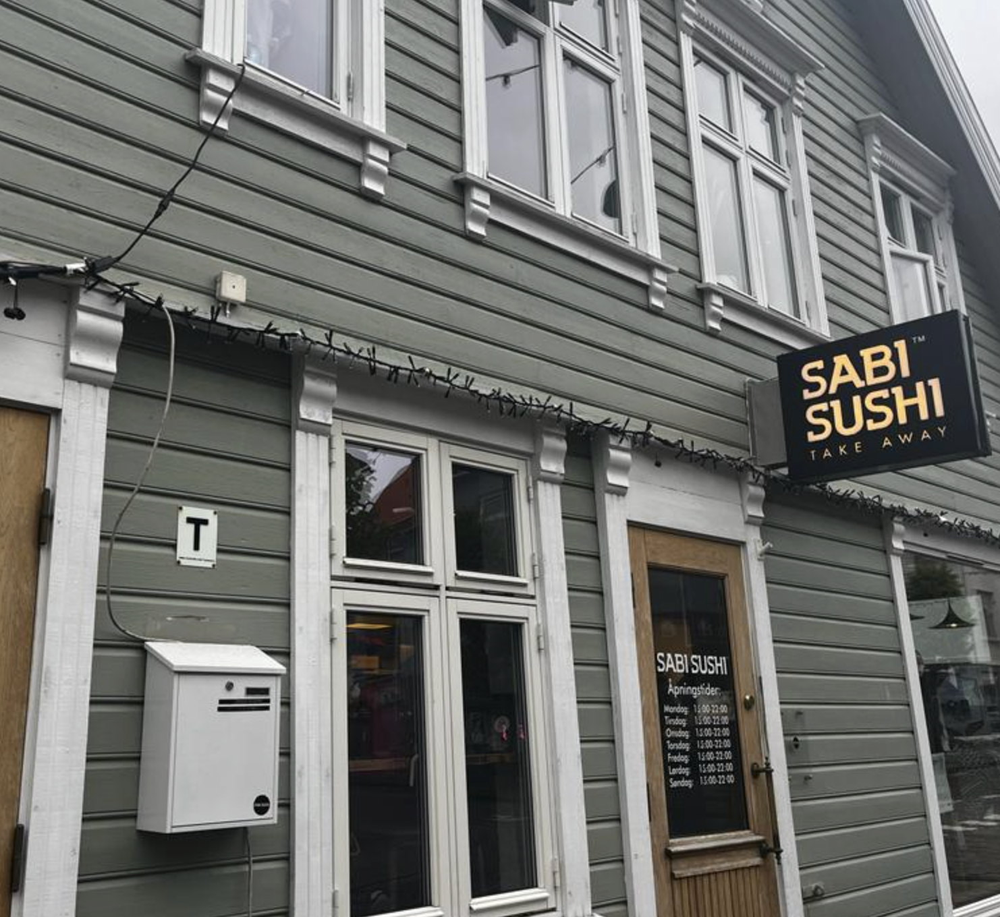
Residence Card
Residence card ini prinsipnya sama seperti KTP. Biasanya akan terpakai ketika kita butuh verifikasi diri, seperti ketika mengambil obat di apotik. Daripada membawa paspor kemana-mana, residence card sudah cukup. Tidak ada informasi mengenai P-num di dalam residence card, kecuali tentu 6 digit tanggal-bulan-tahun lahir anda, sehingga pastikan anda ingat 5 digit terakhir anda, karena akan diminta juga ketika verifikasi diri.

Digital IDs
Ketika kita mencoba mengakses website, akan ada langkah verifikasi diri online. Biasanya pilihan verifikasinya hanya terbatas dari salah dua atau salah tiga dari e-ID di bawah, tergantung pada tipe website yang anda akses. Pada website pajak misalnya, tampilannya seperti di bawah (ada tiga pilihan). Namun pada website kesehatan tampilan di bawah berganti menjadi BankID dan BuypassID saja.

Digital ID atau Electronic ID ini terbagi jadi 4 jenis, namun jenis keempat saya skip saja karena gak relevan untuk tulisan ini. Saya hanya bahas tiga teratas. Fungsinya adalah untuk identifikasi/ autentifikasi identitas kita pada situs-situs penting seperti tax, kesehatan, national registry etc. Hanya bisa dipesan, jika kita sudah punya personal number (11 digit).
MinID
MinID ini adalah e-ID paling BASIC dan gratis. Jadi bisa digunakan di hampir semua akses, kecuali kesehatan. Jadi untuk bisa akses situs kesehatan, untuk bikin janji sama dokter kita (GP), harus pakai e-ID di atas minID, yakni BankID atau BuypassID.
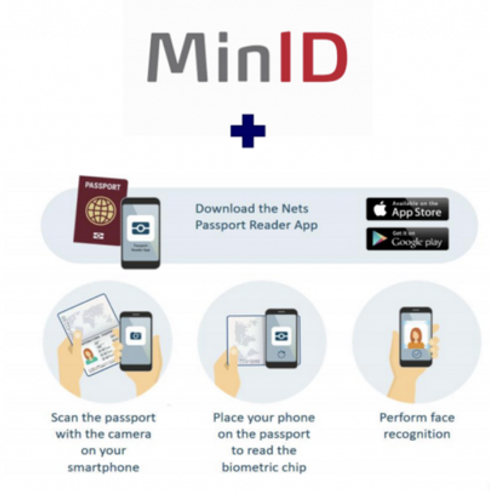
BuypassID
Buypass ID, ini e-ID yg medium, artinya dia bisa akses apa yg minID bisa akses + beberapa situs tambahan, seperti website kesehatan untuk bikin janji temu dengan dokter. Kekurangannya, ini berbayar, sebesar 998 NOK, atau sekitar 1,2 juta IDR. Namun menurut saya pribadi worth it karena bisa ambil di Posten, semacam Pos Indonesia-nya Norway, dan tidak dikirm ke mailbox seperti MinID, jadi di kasus saya yang tidak ada mailbox pribadi, memudahkan. Namun patut dipahami, buypassID ini gak bisa dipesan tanpa P-num dan personal data. Semacam dokumen dari national registry, yg menyatakan nama kita, tempat tanggal lahir, dan bertempat tinggal di mana di Norway. Intinya, memastikan kita memang berdomisili dan legal di Norway.

Yang counter-intuitive adalah, personal data ini bisa dipesan via skatten (tax website), yang cuma bisa diakses via e-ID seperti minID. Jadi saran saya, segera pesan minID segera setelah dapat P-num. Namun kalau tidak bisa menunggu, bisa telpon CS dari kantor pajak, dan minta dikirim ke mailbox.
BankID
BankID ini adalah e-ID paling powerful dari semuanya. Bisa akses semua, dan satu-satunya yang diterima oleh bank, sehingga e-ID ini saja yang bisa dipakai untuk registrasi Vipps. Semacam e-wallet orang Norway. Hampir semua merchant menerima Vipps, dan hampir di banyak tempat yg tidak terlalu besar tokonya, cuma nerima Vipps. Seperti bazaar pasar makanan Indonesia.
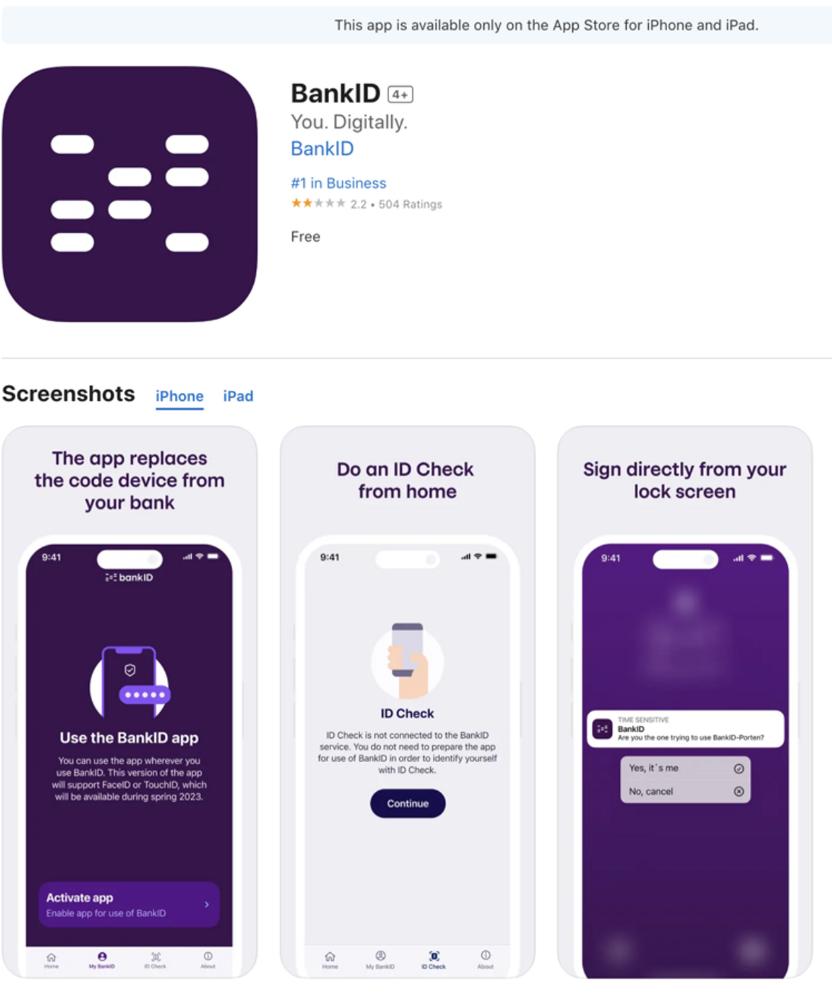
Tapi, bankID ini buatnya paling susah. Disamping karena paspor saya bukan e-paspor, juga memang ada banyak dokumen yang disiapkan. Yang cukup lama buat saya adalah residence card yang baru jadi sekitar 6 minggu pasca dapat P-num. Itupun, harus kirim dokumen lagi ke Oslo, untuk verifikasi bahwa paspor kita valid (karena gak ada chipnya).
To recap:
Dapat personal num → bikin minID → beli BuypassID
dapat residence card → daftar DNB → bikin BankID
Akun Bank Lokal
Sparebank
Sparebank-1 ini adalah bank pertama saya, karena tidak butuh residence card, bankID. Jadi hanya perlu personel num, dan paspor. Tinggal daftar online, nanti jika sudah ready akan dipanggil ke bank terdekat untuk verifikasi dan pembuatan akun bank. 1-2minggu setelahnya akan dikirimkan kartu debit ke mailbox.

Patut dicatat untuk ganti region sesuaikan sama postcode ketika mendaftar, karena nanti akan diarahkan ke website yang berbeda.
Untuk yang tidak ada mailbox (seperti saya), ada opsi untuk pengambilan kartu debit dari akun bank anda diberikan di kantor tempat anda mendaftar. Saya sendiri mendapatkan kartu debit kurang lebih seminggu setelah akun bank dibuat.
Tips dari saya adalah langsung minta kartu kredit juga untuk pribadi dan istri / minta naik limit CC (kalau dibutuhkan), karena kalau kita minta setelahnya dan online, berhubung kita belum ada rekam kredit di Norway, hampir pasti akan ditolak. Jadi baiknya langsung ngobrol sama CS bank, dan minta dibuatkan kartu kredit.
Akun Altinn (Digital Docs)
Altin ini pada dasarnya seperti mailbox digital semua hal terkait informasi kita di Norway. Hanya bisa login ke sini kalau kita ada buypassID atau bankID. MinID gak bisa. Kalau kita melakukan perubahan alamat misalnya, akan ada email beserta dokumen pdf di Altinn, kalau kita ajukan tax card etc. Contoh inbox di bawah:
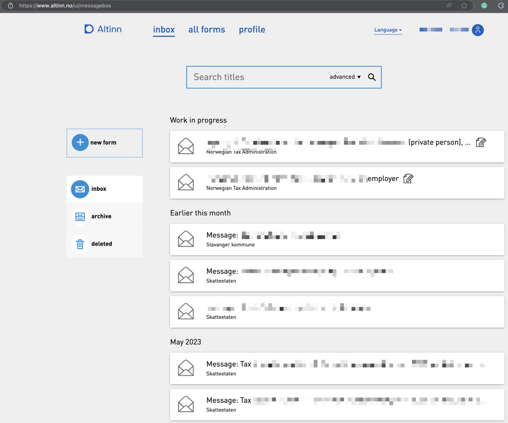
Public Health (Helsenorge)
GP (Personal Doctor/ Clinic)
Helsenorge (Helsenorge – din helse på nett - Helsenorge) adalah website untuk akses informasi kesehatan pribadi. Di website inilah kita buat temujanji dengan dokter (GP) kita yang sudah didaftarkan atas nama kita. Kita bisa cek kita terdaftar dengan GP siapa di Bytte fastlege - Helsenorge. Pastikan nomor hp anda terdaftar di helsenorge, sehingga setiap kali ada notifikasi maka anda akan dapat pesan teks. Selalu cek pesan di hp anda, dan email anda untuk setiap notifikasi terkait jadwal cek dokter, vaksin, temu janji dll.

Yang patut diwaspadai ketika ke klinik, atau ke pengobatan/ pengecekan yang melibatkan klinik apapun, pastikan anda bertanya dengan perawat apakah yang anda dapatkan berbayar atau gratis. Bila berbayar, PASTIKAN anda membayar segera setelah perawatan/ pengecekan. Misalnya untuk cek ke klinik GP, setelah bertemu dokter, pastikan anda membayar di mesin bayar. Karena jika tidak, akan ada ekstra invoice sebesar NOK 100 yang harus anda bayarkan di atas biaya dokter tadi. Mesin bayarnya seperti berikut, anda tinggal masukkan P-num, dan bayar menggunakan kredit kard/ debit.
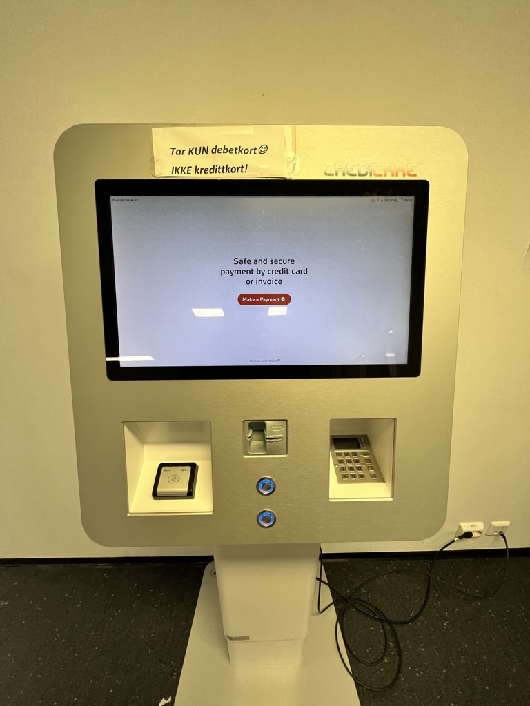
Emergency/ Legevakten
Patut dipahami, GP hanya akan handle di jam dan hari kerja, ketika di luar hari kerja dan jam kerja, maka akan dialihkan ke UGD nya sini, bernama Legevakten.
Disarankan telpon dulu, namun jangan kaget, karena kalau belum benar-benar emergency, maka tidak akan disuruh ke rumah sakit. Jadi sebaiknya telpon dulu, agar nantinya disuruh ke rumah sakit, sudah dapat nomor antrian. Apa yang dianggap emergency? Ada beberapa, namun yang saya ingat adalah:
- Kesulitan bernapas
- Pendarahan
- Kehilangan kesadaran
- Kejang-kejang
Kalau hanya panas dan batuk? Biasanya disuruh istirahat saja. 🙂

Sekolah Anak
Barnehage (Daycare+Playgroup)
Di Norway, anak di bawah 7 tahun wajib masuk Barnehage (daycare + playgroup). Pendidikan wajib di Norway, dan merupakan hak anak dan kewajiban orangtua untuk mendaftarkan. Minimal e-ID adalah MinID untuk masuk ke website pendaftaran Vigilo.

Setelah masuk, anda bisa memulai aplikasi baru dan mendaftar lebih dari satu barnehage. Biasanya akan dipilihkan lokasi yang paling dekat ke lokasi rumah/ tempat tinggal anda yang terdaftar di national registry, sehingga pastikan data anda valid dan up-to-date.

Saran saya ambil saja mana yang paling awal menerima anak anda, dan jangan khawatir ketika anda menerima satu barnehage, maka barnehage lain tidak akan terhapus dan prosesnya tetap berjalan. Sebagai contoh, dalam kasus saya, anak saya mendaftar di dua barnehage yang berbeda dekat rumah. Barnehage yang menerima pertamakali adalah barnehage yg letaknya 5-10min berjalan kaki dari rumah, sehingga kami langsung terima.
Namun, setelah kurang lebih satu bulan, barnehage prioritas kami yang berjarak paling dekat ke rumah akhirnya kosong dan menerima. Sehingga, pada bulan kedua, kami pindah ke barnehage baru.

Belanja Bahan Makanan
Supermarket Umum
Untuk keseharian, pilihan ada di antara CoopMega, Extra, Joker, dan Rema1000. Extra dan Rema1000 ini mirip seperti Alfamart dan Indomaret, di mana-mana ADA. Sedangkan CoopMega ini seperti Giant. Baik Extra, Joker dan Rema buka setiap hari senin-sabtu, dari jam 8-23, kecuali sabtu (tutup/ buka lebih awal). Untuk hari minggu, kebanyakan tutup, ada beberapa yang buka seperti di hari minggu seperti Extra di Sandness sentrum, dan Joker di sampik Vaktapotek Stavanger sentrum. Selebihnya, sebaiknya belanja sebelum di hari minggu.
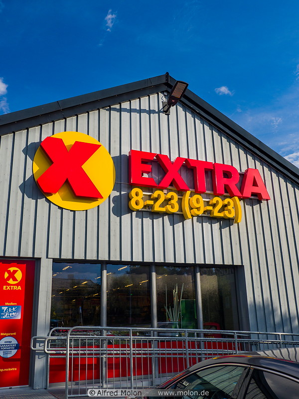
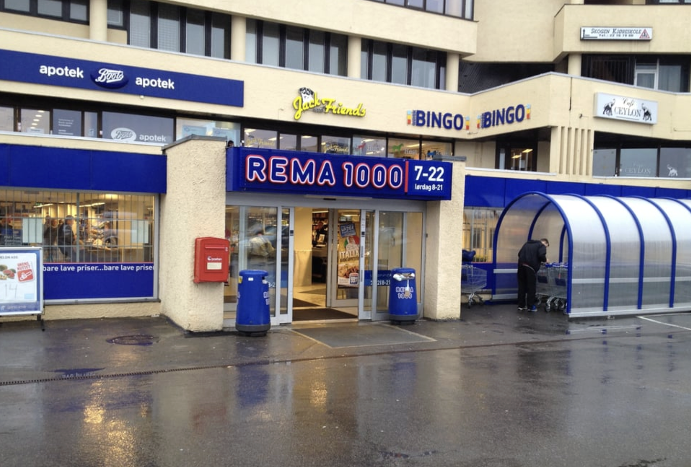
Supermarket Muslim
Supermarket muslim, yang maksudnya menjual daging-dagingan yang halal, ada beberapa. Utamanya ada IMS Internasjonal Matsenter yang lokasinya ada di beberapa di area Stavanger (bisa cari di google maps). Selain itu ada juga rumah daging Turki di area Pedersgata (Istanbul Import).

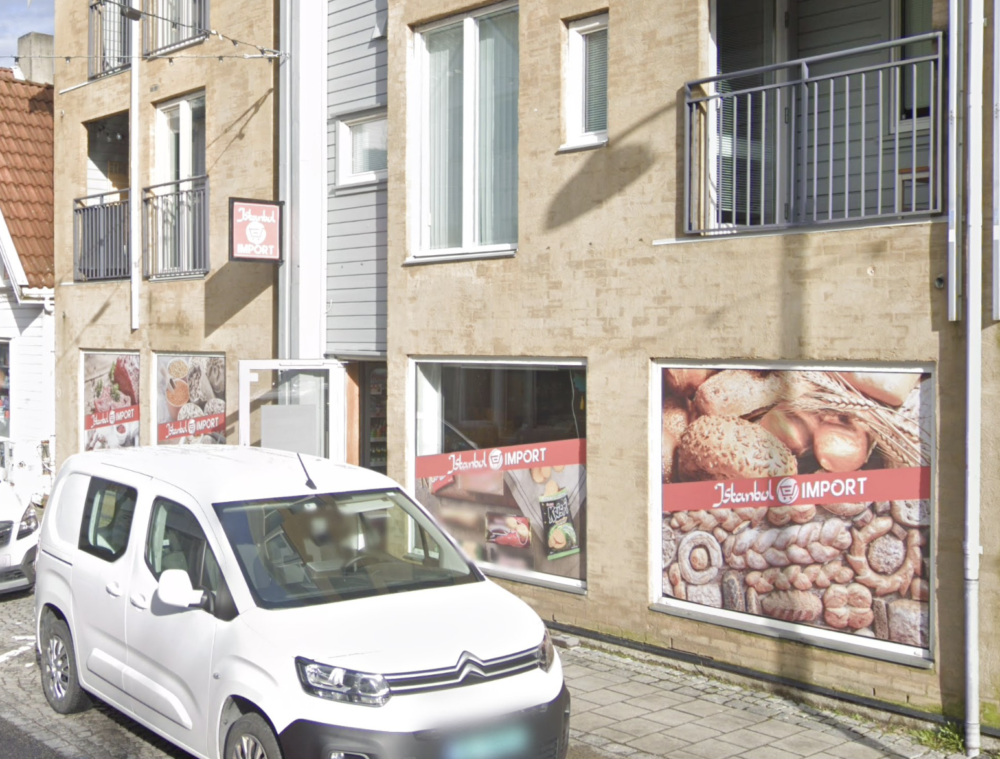
Online Marketplace
Di Norway, ada website sapujagat. Isinya dari jualan barang second-hand, baru, lowongan pekerjaan, sampai pada penyewaan apartemen. Namanya Finn.no. Lagi-lagi, website ini tidak berbahasa inggris, sehingga gunakan Edge browser ya, jadi langsung auto translate. Saya pribadi belum pernah beli di sini sampai sekarang, tapi cerita dari teman-teman, cukup OK terutama untuk pakaian anak-anak yang cepat sekali ganti.

Berapa Biaya Hidup di Norway?
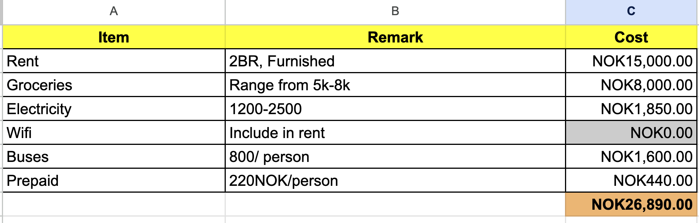
Biaya hidup sangat bergantung terhadap status anda (single/ family), lokasi tempat tinggal anda (Oslo/Stavanger, Tromso, Trondheim, etc), dan gaya hidup anda (masak/ beli). Di atas adalah tabel yang saya pakai untuk estimasi pengeluaran per bulan. Rincian saya jabarkan di bawah.
1. Tempat tinggal
Dalam kasus saya, tempat tinggal memakan pengeluaran paling besar. Untuk lokasi yg masih dalam jarak tempuh 15-20min dari sentrum (pusat kota stavanger), harga sewa bervariasi antara 12,000 NOK hingga 16,000 NOK. Patut diingat kalau ketika mencari rumah, usahakan kunjungi rumahnya (visiting), dan kalau bisa punya kontak yg bisa rekomendasikan anda pertamakali (biasanya landlord/owner akan telpon nomor tersebut untuk memastikan anda memang legit).
Jika anda bertempat tinggal di Stavanger, anda akan berhak akan bus gratis senilai 650 NOK per bulan, sehingga, anggap saja jika anda menyewa tempat tinggal di area stavanger – maka anda akan mendapatkan diskon minimal 650 NOK.
2. Groceries
Pada umumnya biaya makan bergantung dengan jumlah anggota keluarga anda (single/ family), dan gaya hidup/makan anda. Kalau anda masak, dan mau berkompromi dengan bahan makanan (tidak melulu beli barang impor), maka biaya makan anda akan relatif rendah (5000 NOK jika single, 7000 jika family).
Namun jika sering beli barang impor (makanan asia misalnya), maka mungkin kisaran 8000-10,000 NOK lebih masuk akal.
3. Electricity
Listrik bergantung pemakaian, namun umumnya tinggi di musim dingin (2000-3000 NOK) dan rendah di bulan-bulan lain (1000 NOK), sehingga reratanya anggap saja 1500-2000 NOK per bulan.
4. Wifi dan Prepaid
Wifi ini tergantung dengan deal tempat tinggal anda. Pada banyak kasus, wifi sudah termasuk ke dalam uang sewa, namun jika memang tidak, biaya yg diperlukan bergantung pada kecepatan internet, dan provider yg tersedia di lokasi tempat tinggal. Untuk prepaid sudah saya bahas di bab sebelumnya (Nomor HP Lokal dan Paket Data).
4. Transportasi
Hampir di semua region di Norway, transportasi publik sangat baik. Di stavanger, terdapat dua transportasi publik, bis dan kereta. Providernya adalah kolumbus (baca bab Transportasi Publik). Bis nya sangat reliable dan menjangkau hampir semua area, bahkan sampai ke area perumahan. Biayanya untuk warga yang bertempat tinggal di Stavanger– gratis. Namun jika di luar area stavanger, biayanya 650 NOK per bulan per orang. Region lain seperti Trondheim, biaya tiket senilai 950 NOK per bulan per orang.
Untuk Bus, bila bertempat di Stavanger, bisa mendapatkannya dengan gratis. Cek Khusus Penduduk Stavanger
Pajak Pendapatan di Norway
Di Norway, pajak untuk pendapatan yang per tahun tidak lebih besar dari 650,000 NOK adalah sebesar 25%. Sedangkan untuk pendapatan di atas 650,000 NOK akan dihitung berdasarkan bracket tax yang ditentukan, lebih mudahnya bisa menuju link ini: Tax Calculator. Contoh seperti di bawah;
 Patut dipahami, bahwa pajak di Norway dihitung per tahun, namun diambil sebanyak 10.5 bulan, karena pajak di bulan May-Jun adalah 0%, sedangkan di bulan-bulan masuk Winter senilai 50% dari nilai aslinya, sehingga 12-1.5=10.5. Kenapa ini penting? Karena nilai pajak anda per bulan akan menjadi lebih besar dari hitungan per tahun dibagi 12 bulan.
Patut dipahami, bahwa pajak di Norway dihitung per tahun, namun diambil sebanyak 10.5 bulan, karena pajak di bulan May-Jun adalah 0%, sedangkan di bulan-bulan masuk Winter senilai 50% dari nilai aslinya, sehingga 12-1.5=10.5. Kenapa ini penting? Karena nilai pajak anda per bulan akan menjadi lebih besar dari hitungan per tahun dibagi 12 bulan.
Sebagai contoh, jika pajak anda adalah senilai 280,000 NOK per tahun dari total pendapatan senilai 800,000 NOK, maka pajak anda adalah 35% dari total pendapatan. Namun karena pajak hanya ditagih sebanyak 10.5x dalam setahun, maka di bulan-bulan yg ditagih pajak, setiap penagihan, nilainya dalah 35%*12/10.5=40%. Itulah sebabnya pajak di Norway “terlihat” tinggi.
Holiday Pay
Di Norway, ada satu hal yang tidak ada di banyak negara lain, yakni holiday pay.
Pada banyak perusahaan di Norway, kita biasanya diberikan kurang lebih 21-25 hari libur (vacation), yang kalau dhitung kurang lebih 1 bulan. Sehingga, ada mekanisme, supaya di bulan kita tidak bekerja selama kurang lebih 1 bulan ini, kita tetap menerima gaji – inilah Holiday Pay.
Besarnya kurang lebih 12% dari income tahunan (tergantung umur dan lain-lain, baca lebih lanjut di sini ), namun hanya bisa didapatkan ketika kita sudah bekerja selama 1 tahun di Norway. Holiday pay ini diberikan di bulan-bulan memasuki musim panas (summertime), sekitar bulan May-Jun, sehingga jika anda seperti saya yang datang di bulan April, anda tidak akan mendapatkan gaji di bulan May-Jun, karena belum genap 1 tahun di Norway. Baru di tahun berikutnyalah anda akan mendapatkan gaji full di bulan May-Jun.
Dalam beberapa kasus, ada situasi di mana anda bisa MENJUAL jatah cuti anda demi mendapatkan gaji di bulan May-Jun, ketika anda belum genap 1 tahun di Norway.
Penutup
Terimakasih sudah membaca sampai sini. Jika ada yang ingin ditanyakan, langsung saja DM atau Mention saya di Twitter. Saya sudah rangkumkan pula beberapa hal sehari-hari di thread di bawah. Enjoy!
Footnotes
DUF-num adalah nomor pendaftaran ketika mendaftarkan diri anda/ anggota keluarga di UDI (website imigrasi Norway). Nomor ini terhubung dengan nomor antrian aplikasi anda di sistem.↩︎
Digital ID atau e-ID ini memiliki tingkat akses yang berbeda. MinID adalah e-ID paling dasar, bisa digunakan untuk membuat akun bank, dan akses pajak. Untuk akses ke kesehatan anda butuh minimal BuypassID. Sedangkan untuk aplikasi keuangan seperti Vipps anda butuh BankID.↩︎
Citation
@online{arie wijaya2023,
author = {Arie Wijaya, Aditya},
title = {Petunjuk {Hidup} Dan {Menetap} Di {Stavanger,} {Norway}},
date = {2023-06-26},
url = {https://adtarie.net/posts/008-guides-norway},
langid = {en}
}